Smart Metering
Globale Aspekte der Energieversorgung
Wie viele "Energie-Sklaven" benötigen wir?
the energy slave is a unit of measurement that allows us to better understand and evaluate the consequences of our life choices. An energy slave works to produce energy 24 hours a day. He produces an average power output of 100 W (875 kWh/year)
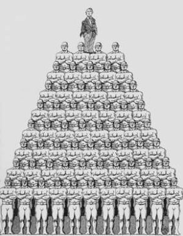
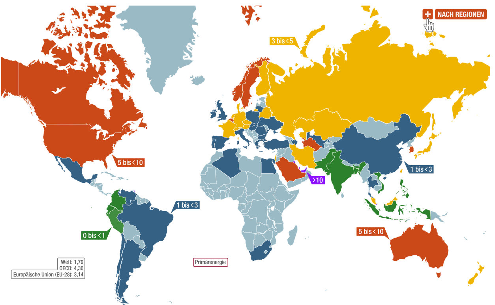
🧠 Primärenergiebedarf
misst den gesamten Energiebedarf (eines Landes). Er umfasst den Verbrauch des Energiesektors selbst, Verluste bei der Umwandlung (z.B. von Öl oder Gas in Elektrizität) und Verteilung von Energie sowie den Endverbrauch durch die Endverbraucher. Ausgeschlossen sind Energieträger, die für nichtenergetische Zwecke verwendet werden (z.B. Erdöl, das nicht zur Verbrennung, sondern zur Herstellung von Kunststoffen verwendet wird).
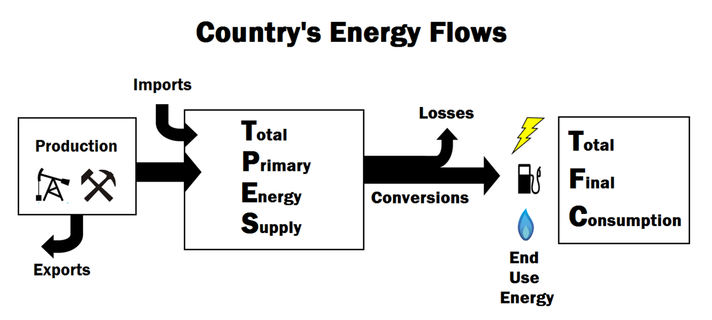
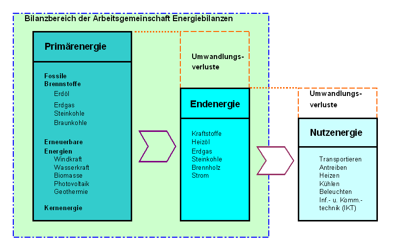
{kind=link}
🤓 Tonne of oil equivalent?
(toe) ist eine Energieeinheit, die als die Energiemenge definiert ist, die bei der Verbrennung einer Tonne Rohöl freigesetzt wird. Sie beträgt etwa 42 Gigajoule oder 11,630 MWh
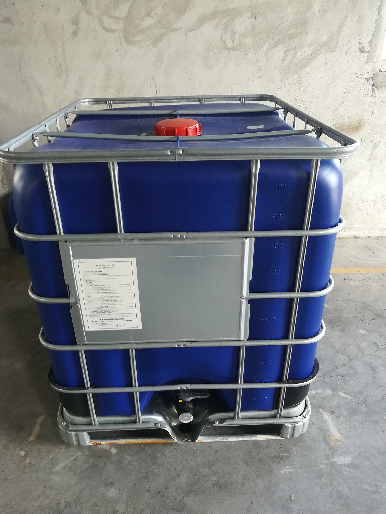
Wie viele "Energie-Sklaven" benötigen wir?
\(\text{No. of Energy Slaves}\) \(= 3.7 \frac{\text{toe}}{\text{a}} \cdot 11.630 \frac{\text{MWh}}{\text{toe}} \cdot 1000\frac{\text{kWh}}{\text{MWh}} \cdot \frac{1}{875}\frac{\text{a}}{\text{kWh}}\) \(= 3.7 \cdot 11.630 \cdot 1000 \cdot \frac{1}{875}\) \(= 49.2\) * Jeder Europäer benötigt mehr als 50 virtuelle Energiesklaven, die Tag und Nacht arbeiten!
Wasserkocher
- \(P = 3.7 \cdot \frac{11,630}{8760}\frac{kWh}{h}=4.9kW\)
- als würden mehrere Wasserkocher kontinuierlich durchlaufen
- Is it bad to have too many energy slaves / kettles?
Ökonomie
-
Kosten: Energieerzeugung ist teuer 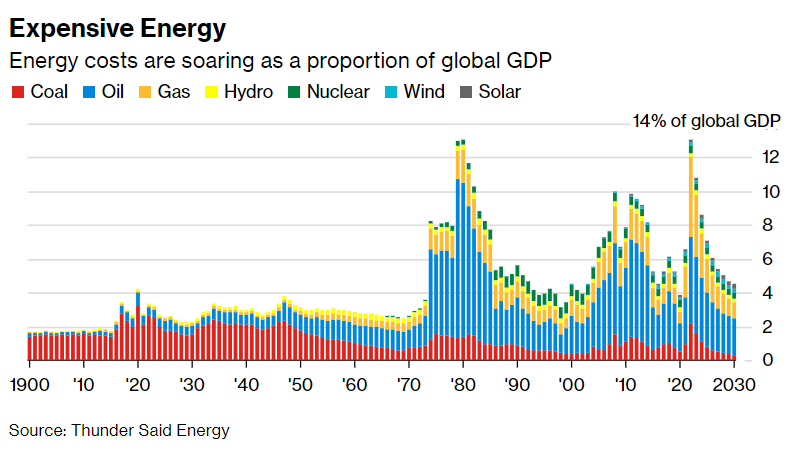
-
This forecast was from before Russia's attack on Ukraine
Endenergieverbrauch nach Sektoren
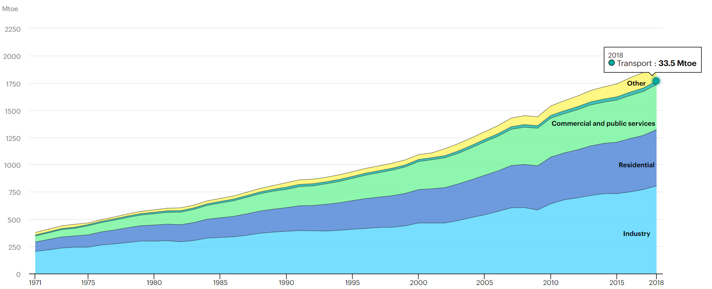
Nachfrageseite: Endverbrauch nach Sektoren
- Privathaushalte: Heizen, Kochen, Kühlen, usw.
- Verkehr: Transport von Personen und Gütern
- Gewerblich: Verkauf von Waren und Dienstleistungen
- Industrie: Herstellung von Waren, in der Regel aus Rohstoffen.
- Landwirtschaft: Energieverbrauch: Düngemittel, Licht, Wärme, Maschinen
Gesamt Primärenergieversorgung der Welt nach Quellen
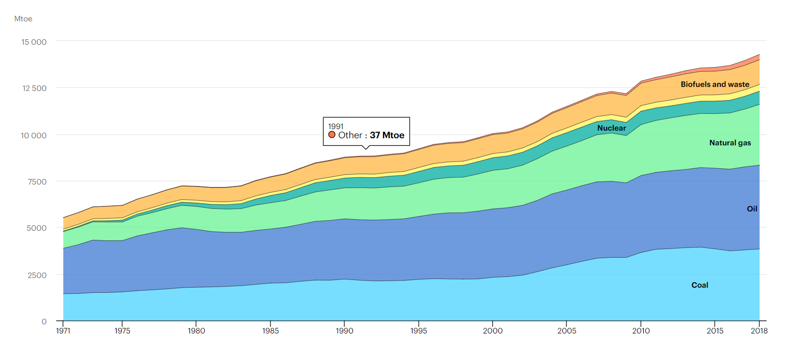
🤓 Gesamt Primärenergieversorgung im Jahr ?
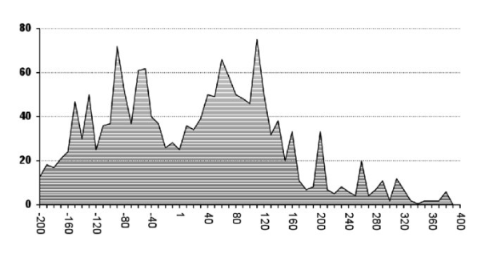
Schätzungen der Waldrodung in Mitteleuropa (Deutschland, Nordostfrankreich) anhand archäologischer Holzreste 200 v. Chr. bis 400 v. Chr. (dekadische Daten; jeder Punkt des Diagramms steht für die Intensität des Holzeinschlags).
Energiepolitisches Zieldreieck
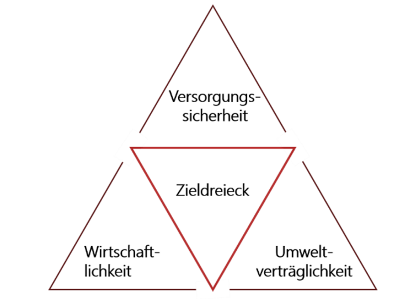
Zusammenfassung
- Der größte Teil der Primärenergie weltweit stammt immer noch aus nicht erneuerbaren Energiequellen
- Sichere, erschwingliche Energie ist eine der wichtigsten Triebfedern der menschlichen Entwicklung
- Energie wird in allen Sektoren benötigt (Haushalt, Transport, Produktion)
- Nur ein kleiner Teil der Energie wird in elektrische umgewandelt
Eine kurze Einführung in die Energiewirtschaft
Energiekosten und Erlöse
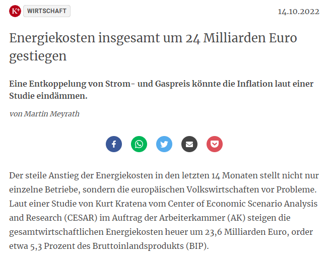
Stadtwerke-Welt (mit Beginn der Elektrifizierung 19 Jhd.)
- Ein Stadtwerk betreibt Netz und Stromerzeugung in seinem Netzgebiet
- Monopolstellung der Stadtwerke
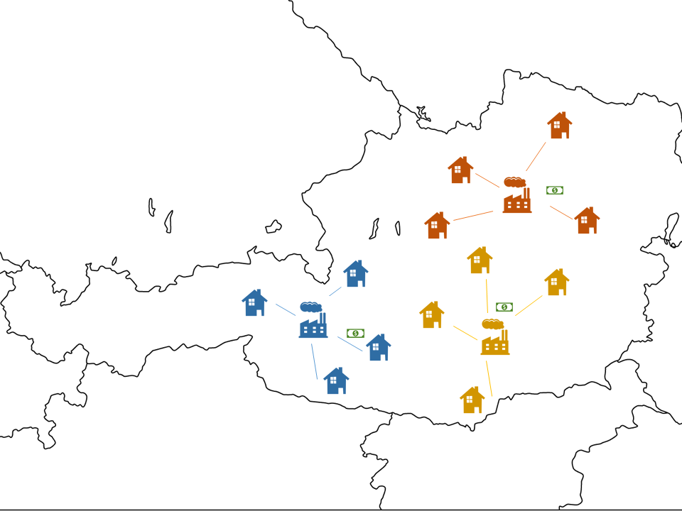
Europäische Energiemarktintegration
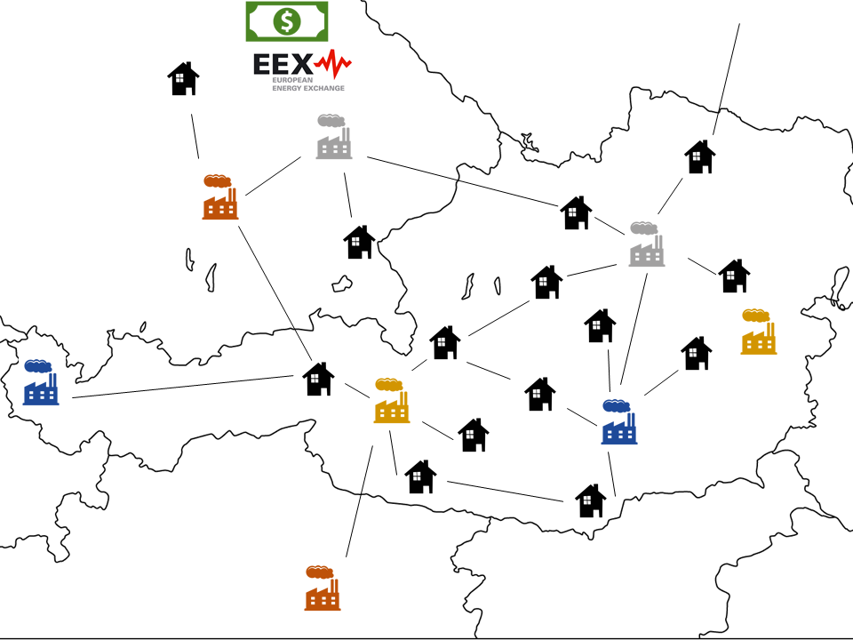
- Entwicklung eines gemeinsamen Europäischen Stromnetzes (Ausfallsicherheit)
- und Binnenmarktes
- Aus integrierten Stadtwerken (und Energiekonzernen) werden getrennte Netzbetreiber und Energieversorgungs-unternehmen (EVU)
Europäische Energiemarktintegration
- Alle Marktteilnehmer handeln Energiemengen frei miteinander
- Netz wird von neutralen Netzbetreibern verantwortet
- Handel von Strom kann bilateral oder auf der Europäischen Strombörse (EEX) stattfinden
- Netzrestriktionen werden innerhalb einzelner Länder vom Markt ignoriert
- Solange keine Netzrestriktionen an den Gren-Kuppel-Stellen bestehen haben Länder den gleichen Strompreis
- Eine ähnliche Logik gilt für den Gas-Markt
Trennung von Natürlichem Monopol (Netz) und Markt (Energie)
- Beim Stromnetz handelt es sich um ein natürliches Monopol (ebenso Gas und Eisenbahn)
- Kein Mitbewerber kann ein Parallelnetz aufbauen, und dieses günstiger anbieten
- Idee: Netz und Energie werden getrennt behandelt
- Dies soll den Europäischen Austausch fördern und Kosten senken
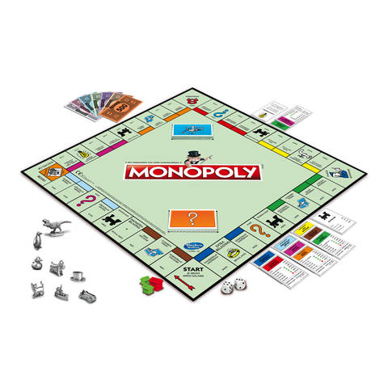
Elektrische Energie aus Strom ist ein Homogenes Gut
- Eine kWh Strom kann überall im Europäischen Stromnetz eingespeist werden
- Eingespeiste und entnommene Energie können nicht nachverfolgt werden
- Das Netz wird nicht beachtet (Kupferplatte, Zonales Preissystem)
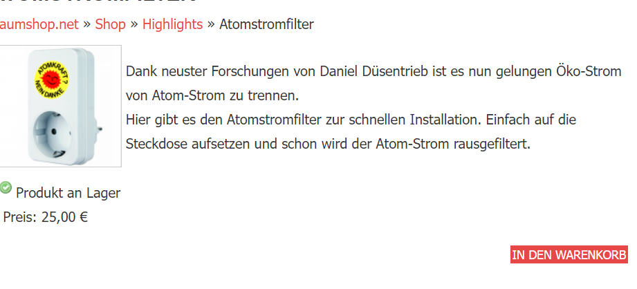
Ökostrom
- EVU, dies Ökostrom anbieten haben folgende Möglichkeiten
- Ökostrom selbst produzieren
- per Liefervertrag einkaufen
-
handelbare Erzeugungszertifikate erwerben
-
Mengengleiche Ökostromversorgung: Ausgleich übers Jahr
- Zeitgleiche Ökostromversorgung: Ausgleich in jeder Viertelstunde
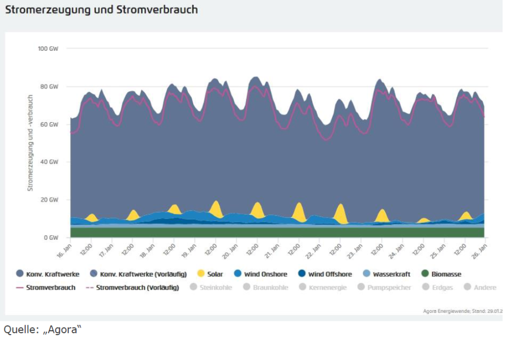
Rollen auf dem Energiemarkt (vereinfacht)
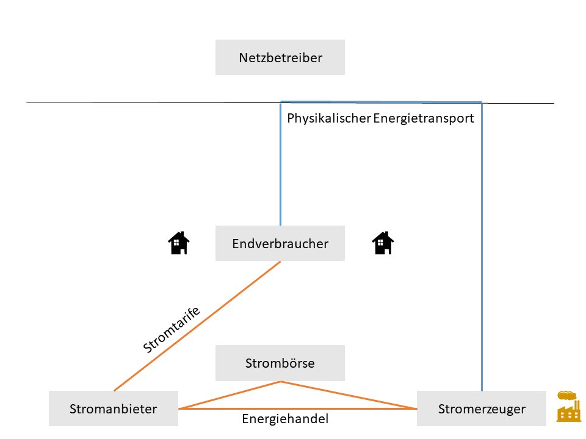
Rollen auf dem Energiemarkt (vereinfacht)
- Ein Unternehmen kann gleichzeitig unterschiedliche Rollen einnehmen
- Stromanbieter: Große Erzeuger vom elektrischem Strom (Kraftwerksparks) verkaufen Energiemengen
- Stromnachfrager: Energieversorgungsunternehmen (EVU) kaufen Energiemengen
- Endverbraucher: Haushalte und Gewerbe, beziehen Strom von den Energieversorgungsunternehmen und rechen über Tarife ab (nur sehr große Firmen handeln selbst auf der Strombörse)
- Netzbetreiber: Greifen nicht in den Handel mit Strom ein
Angebot und Nachfrage
- Stromanbieter bieten zu marginalen Kosten an: Was immer es kostet eine MWh elektrischen Strom zu produzieren
- Erneuerbare Erzeuger haben marginale Kosten von 0 €/MWh
- Gaskraftwerke sind teuer
- Kapitalkosten werden nicht eingepreist (sunk costs)
- Stromnachfrager sind unelastisch: EVU müssen beschaffen, was Haushalte und Gewerbe beziehen
Merit Order Modell
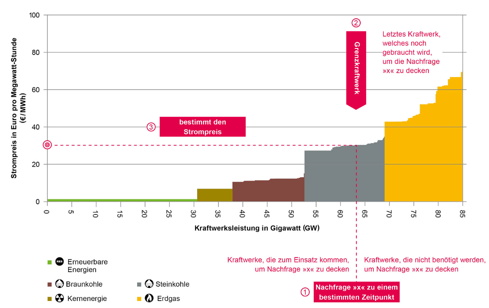
Merit Order Modell
- Die Aufreihung des Angebots wird als Merit Order bezeichnet
- In jeder Viertelstunde wird die der Einsatz der Erzeuger nach der Merit Order festgelegt
- Es muss immer genau so viel Strom abgenommen, wie eingespeist werden
- Die Nachfrage kann kurzfristig als nicht-elastisch (preis-unabhängig) angenommen werden
- Der Schnittpunkt zwischen Angebot und nachfrage bestimmt den Preis
- All abgerufenen Kraftwerke erhalten den Preis, den das letzte Kraftwerk erzielt
Preis-Schwankung Intraday
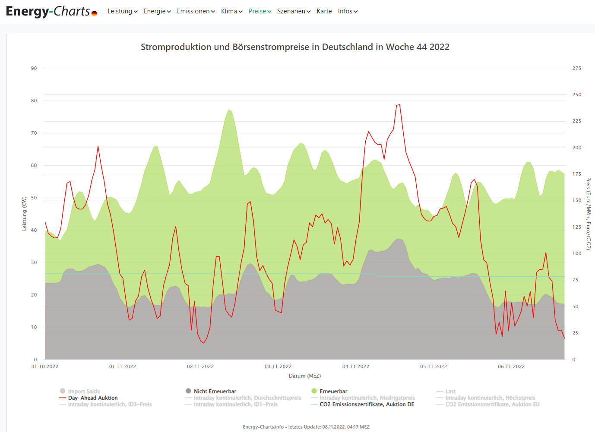
Preis-Schwankung Intraday
- Je nach Last und Erzeugungssituation stellen sich unterschiedliche Preise ein
- EVU haben ein Interesse den Verbrauch ihrer Kund:innen in Richtung der günstigen Stunden zu verschieben
- Zeit-dynamische Tarife
- Unterbrechbare Lasten
- Das würde die Elastizität/Flexibilität der Nachfrage erhöhen
- EVUs müssen in teuren Stunden weniger Strom beziehen
- Geschieht dies nicht im ausreichenden Maße
- Strompreis steigt
- Mehr Emissionen
- Lastabschaltungen
Struktur des Stromnetz
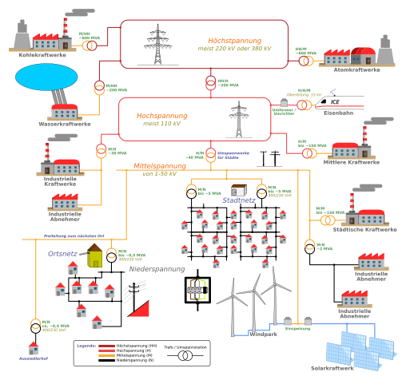
{kind=link}
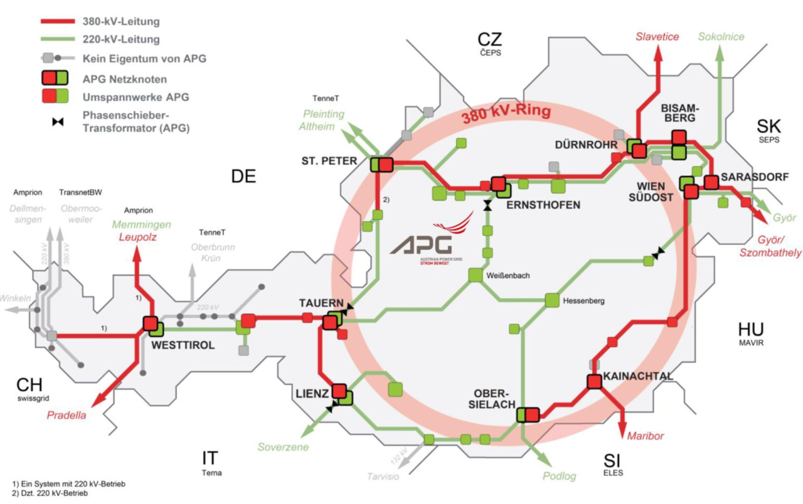
Übertragungsnetz
- Maschen-Topologie
- Engpässe bei starken lokalen Ungleichgewichten
- Marktergebnis kann nicht umgesetzt werden: Redispatch
- Weitere Aufgaben der Übertragungsnetzbetreiber
- Frequenzhaltung
- Systemreserve
Verteilnetz
- Ring- oder Strang-Topologie
- Engpässe bei hohen Gleichzeitigkeiten
- Wärmepumpen
- "Zahnarzt-Allee" 🔥_🚗🚗🚗🚗🚗
- PV-Rückspeisung 🔥_⚡⚡⚡⚡⚡
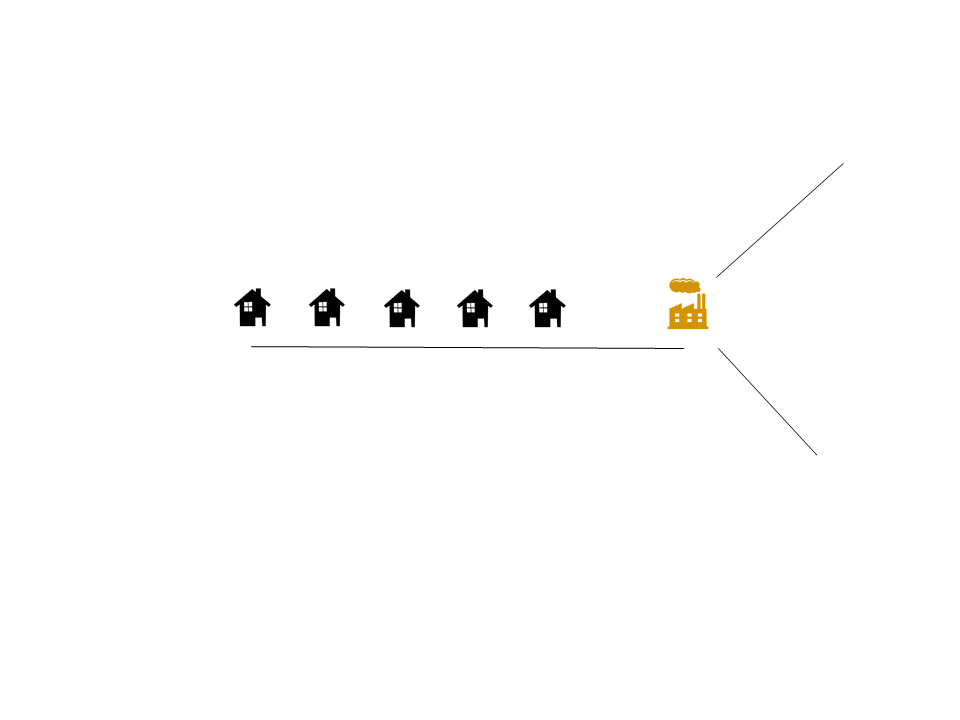
Nachfrage: Relevanz der elektrischen Energieversorgung
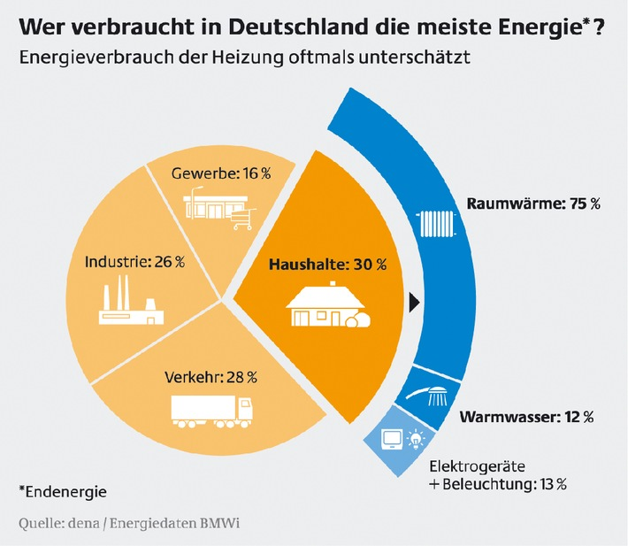
Nachfrage: Zunehmende Elektrifizierung
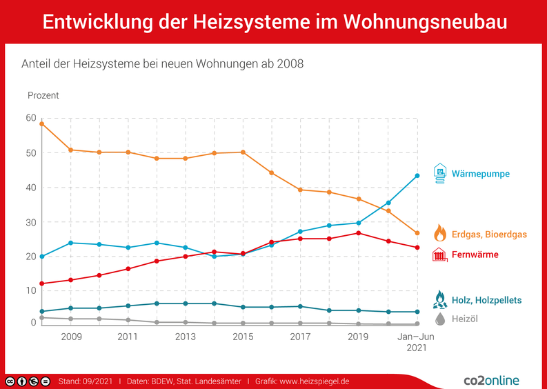
Nachfrage: Emissionsvermeidung durch Elektrifizierung

{kind=link}
Angebot: Anstieg volatiler Erneuerbarer Energien
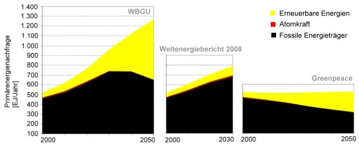
🧠 Fazit
- Strom als "wertvollster" Energieträger, da geringe Umwandlungsverluste
- zunehmend höherer Teil an Energiedienstleistungen wird aus Strom gedeckt
- Stromangebot wird zeitlich flexibel (Photovoltaik und Wind nicht immer verfügbar - Dunkelflaute)
- Nicht nur Menge des Strombezugs, sondern auch dessen Zeitpunkt ist entscheidend
- EVU und Netzbetreiber benötigen Daten über Erzeugung und Verbrauch zu Planung und Optimierung
- EVU und Netzbetreiber haben Anreize den Verbrauch der Endverbraucher steuernd zu beeinflussen
Smart Metering
Herkömmliche Zähler
- integrierende Messung
- keine Messzeitreihe
- Visuelles Ablesen eines Momentanwerts
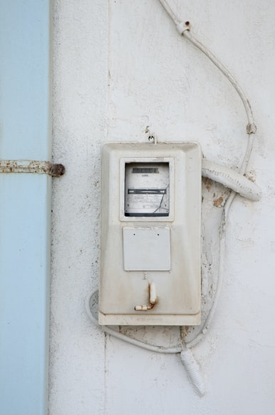
Standardlastprofile
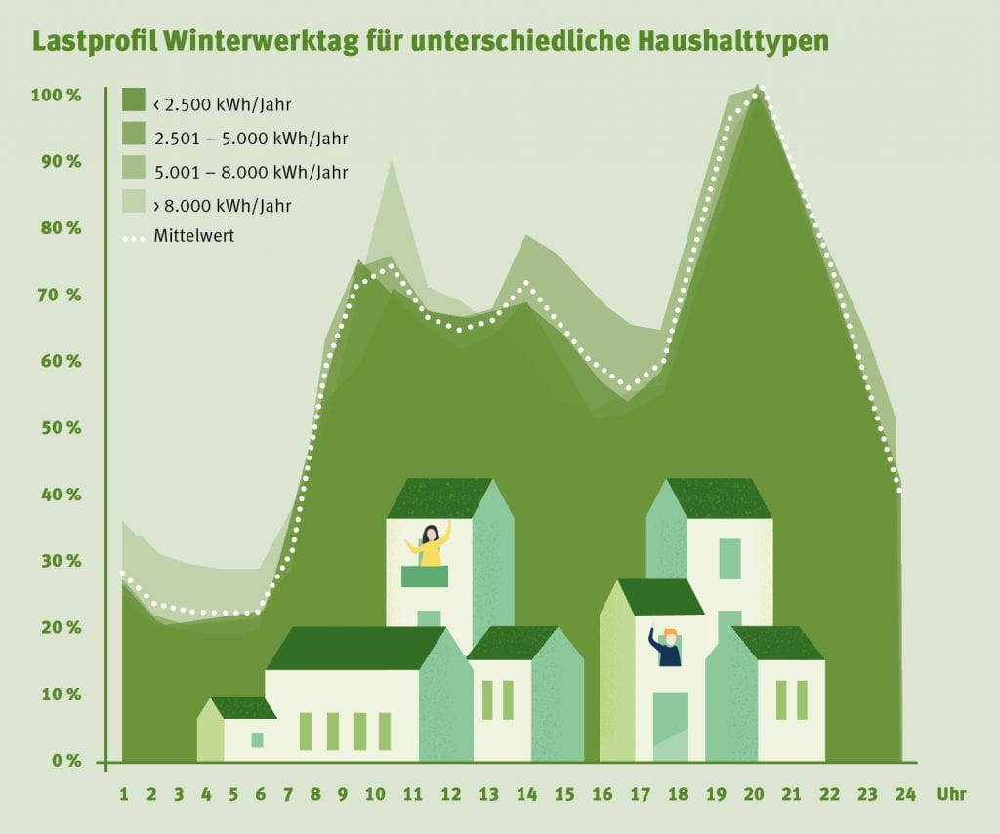
- auf historischen Daten basierende Annahmen über typische Verbrauchsmuster
- gemittelt (enthalten keine Lastspitzen)
- dienen der Planung (z.B. Auslegung des Netzes, Beschaffung von Strom an der Strombörse)
- zunehmend unpräzise
Intelligente Zähler
-
(Smart Meter) sind Gas-, Wasser- oder Stromzähler, die digital Daten auszeichnen, senden und ggf. auch empfangen (Busteilnehmer)
-
Basisfunktionen:
- Messung
- Datenspeicherung
- Kommunikation
Komponenten eines Smart Meters (AT)
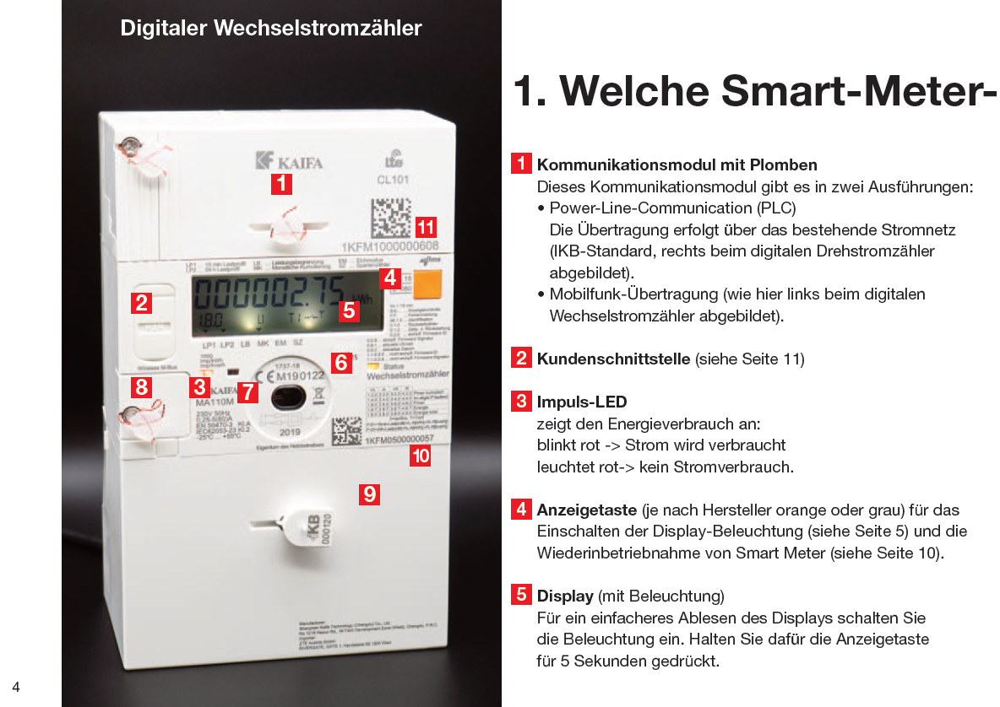
Kommunikation zwischen verschiedenen Rollen

Komponenten eines Intelligentes Messsystems (D)
- Strikte Trennung in zwei kompatible Komponenten:
- Modernen Messeinrichtung erfasst Energiefluss digital
- Smart Meter Gateway Kommunikations-Schnittstelle, welche die Zählerwerte speichern, Daten verarbeiten und mit einem Netzwerk kommuniziert (Kommunikationsmodul)
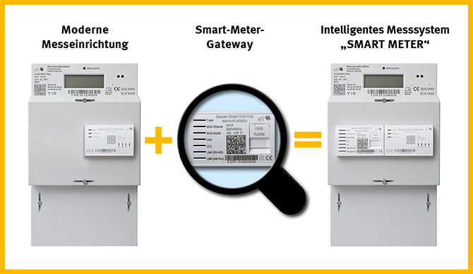
Kommunikationsmodul
- Anbindung über diverse Bus-Systeme (Power-Line-Communication, Mobilfunk, M-Bus, TCP/IP, ...)
- ermöglicht Fernauslesung: Energieversorgungsunternehmen kann Stromverbrauch aus der Ferne ablesen
- Privatsphäre: Bedenken, dass auf Verhalten und Anwesenheit geschlossen werden kann
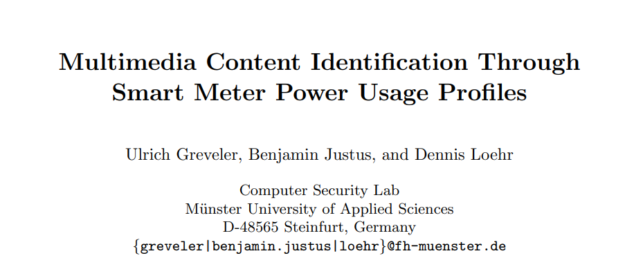
Kommunikationsmodul: Einführung neuer Stromtarife
- Zeitvariable Tarife: Strom kostet mehr zu Hochlastzeiten (abends, Wärmepumpen)
- Last-variable Tarife: Strom kostet in Abhängigkeit der bezogenen Leistung
- Zeit-dynamische Tarife: Strompreise können sich flexibel verändern (z.B. alle 15 Minuten)
Gesetzliches
- EU Richtlinie 2006: allen Mitgliedstaaten, soweit technisch machbar, finanziell vertretbar und im Vergleich zu den potentiellen Energieeinsparungen angemessen, alle Endkunden in den Bereichen Strom, Erdgas, Fernheizung und/oder -kühlung und Warmbrauchwasser individuelle Zähler
- tatsächlichen Energieverbrauch des Endkunden
-
und die tatsächliche Nutzungszeit anzeigt
-
mögliche Lösung: M-Bus Sensor + Display
Kundenschnittstelle (Home Area Network)
- in Österreich nicht fix definiert
- Spannung, Wirkleistung, Blindleistung aller Phasen
- häufig MBUS, aber auch andere Bussysteme
- teilweise verschlüsselt
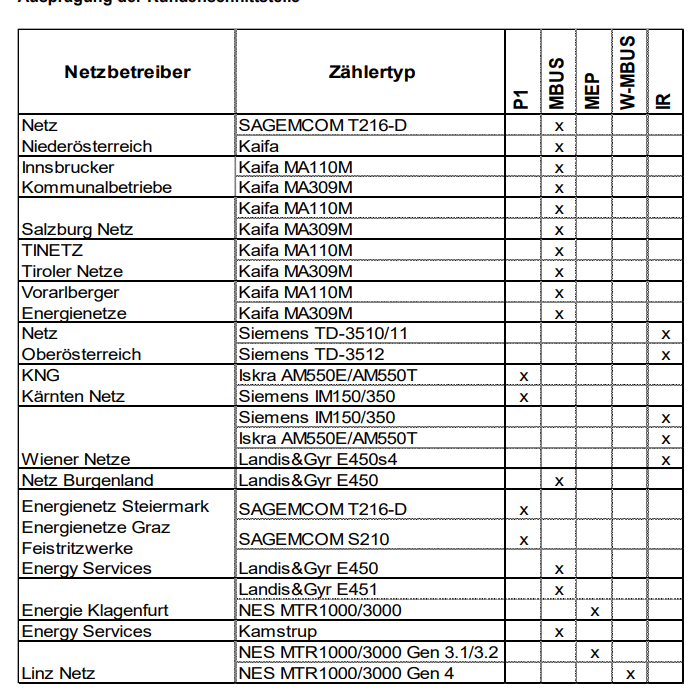
Stand Smart Meter Rollout Europa 2020
| Land | Durchdringung in % | Bemerkung |
|---|---|---|
| Spanien | 100 | |
| Irland | 100 | |
| Dänemark | 100 | |
| Finnland | 100 | |
| Malta | 100 | |
| Italien | 99 | Treiber Stromklau? |
| Luxemburg | 95 | |
| Österreich | 95 | Prakmatisch |
| Frankreich | 95 |
| Land | Durchdringung in % | Bemerkung |
|---|---|---|
| Griechenland | 80 | |
| Polen | 80 | |
| Rumänien | 80 | |
| Deutschland | 23 | Overengineering |
| Lettland | 23 |
Eichrecht
- abrechnungs-relevante Zähler müssen eich-rechtlich zugelassen sein
- Maß- und Eichgesetz (MEG)
- Mengenmessgeräte für Gas,
- Mengenmessgeräte für sauberes Wasser aus Versorgungsleitungen,
- Mengenmessgeräte für thermische Energie (Wärmezähler, Kältezähler),
- Elektrizitätszähler
- Zähler muss bei in Verkehr bringen der Europäischen Messgeräte-Richtlinie MID entsprechen
- Regelmäßig überprüft (geeicht) werden
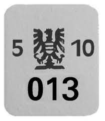
🤓 Smart Meter Österreich
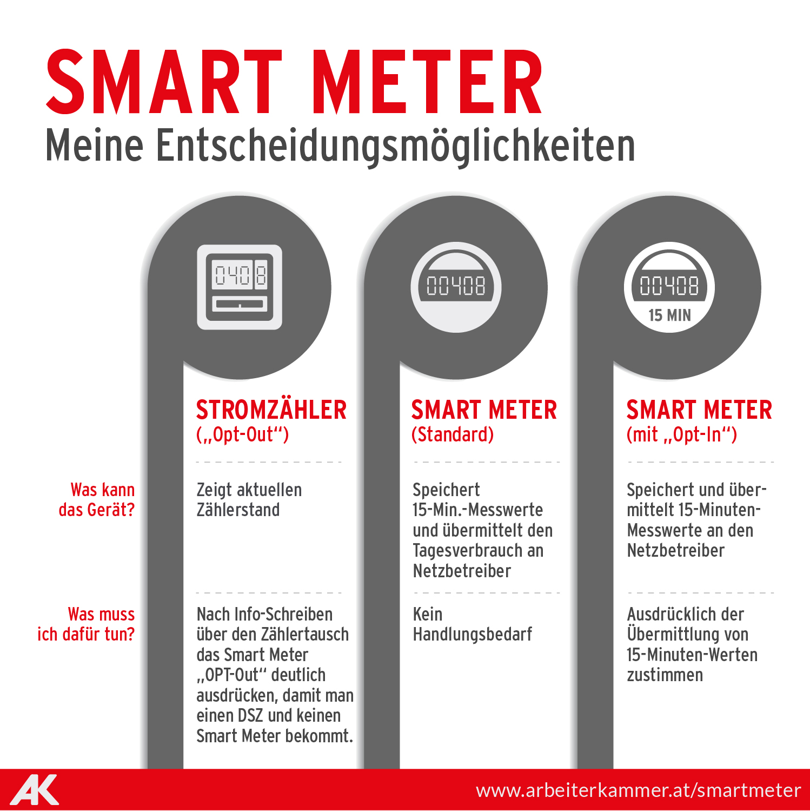
🤓 Besonderheit Deutschland
- Technische Richtlinie 03109-1 Anforderungen an die Interoperabilität der Kommunikationseinheit eines intelligenten Messsystems
- Bundesamt für Sicherheit in der Informationstechnik – BSI definierte umfassende Anforderungen, welche von der Herstellern umgesetzt werden mussten
- z.B. Übertragung über asymmetrische Verschlüsselung und Zertifizierung
- Standardisierte Basisfunktionen (Tarifanwendungsfälle)
Smart Meter Deutschland
- soll Ökosystem zum Vernetzung verschiedenster Akteure spielen
- Zusätzlich zur Kommunikationsmodul (WAN) und Kundenschnittstellen (HAN) können noch weitere Zähler integriert werden (LMN)

Tarifanwendungsfälle
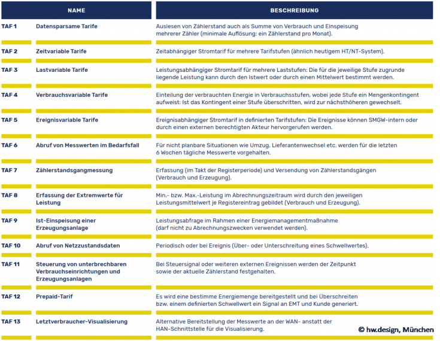
Kritik an Deutschem System
- Späte Markteinführung
- hohe Kosten (>100 €/a)
- Überreglementierung
- Kein Freitraum für Tarifentwicklung
- Anforderungen
- EVU über WAN-Schnittstelle: Abrechnung auf 15 Minuten-Basis ausreichend
- Liegenschaftsbetreiber über HAN-Schnittstelle: Mess- und Regelung in Gebäudeleittechnik erfordert höhere Auflösung (Parallelstruktur)
Einbauempfehlung Deutschland
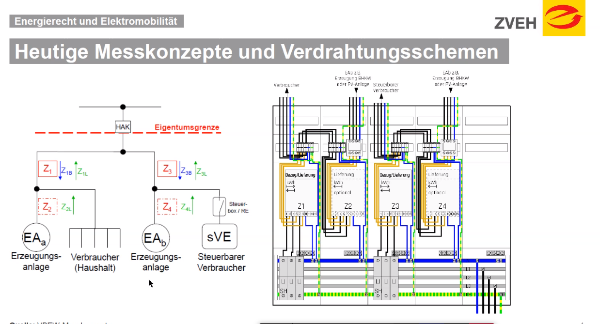